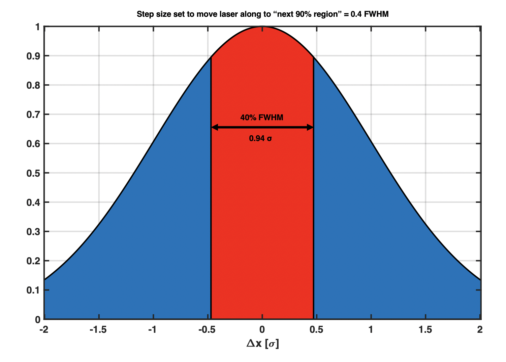
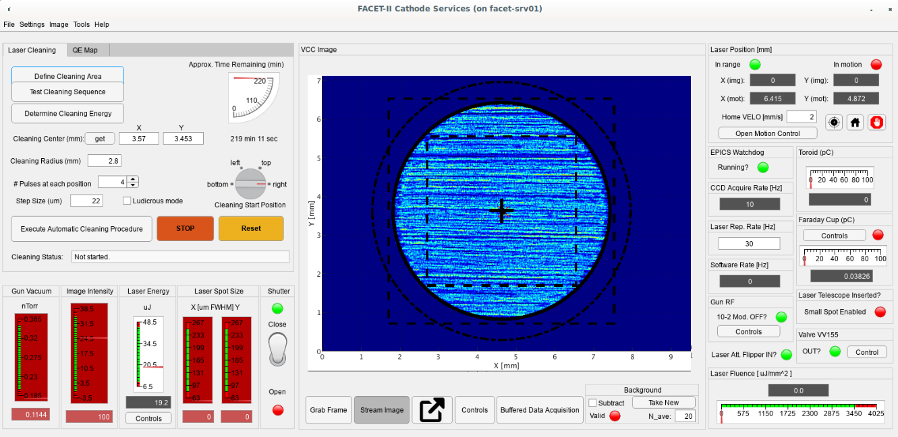

FACET-II Gun: Cathode Services
Author
Glen White, SLAC.
email: whitegr -AT- slac.stanford.edu
v.1.0 (procedures, software and target values under development-
specific values reported here to be updated when operational
experience gained)
Theory | Laser
Cleaning Procedure | Software User Manual
| Simulation
All spot sizes quoted throughout assumed to be in FWHM
units unless otherwise stated.

- Laser transverse profile assumed to be Gaussian and cleaning
assumed to occur in area enclosed by top 90% of laser power
profile (the red zone in the plot above). This sets preferred
step size of 40% FWHM of the transverse profile.
- Experience from BNL-ATF is 20uJ laser energy and 60 x 200 um
spot size required for cleaning to occur.
- Cleaning should raise gun vacuum by ~3E-11 Torr above
observed background level.
- Cleaning re-deposits contamination over previously cleaned
areas. Multiple cleaning passes required.
- Laser parameters for cleaning are: 200 um x 200 um @ 130
uJ
- Clean area with radius 1.5 mm
- Tables of suggested laser cleaning
parameters
General Notes:
- CAUTION: to perform laser cleaning, the laser fluence (by
design) must be set to a level which causes damage to the
cathode.
- Although the software attempts to monitor conditions to
avoid unwanted damage, it is partially dependent on correct
settings supplied by the operator (following the below
procedure), care should be taken and the operator should
continuously monitor conditions during this procedure.
- The laser cleaning software is extremely paranoid- there are
many conditions which cause the laser MPS shutter to be
inserted, do not start or operate this software if occasional
interruption of laser pulse is a problem.
- The general flow of steps is to first determine the area to
clean, then test the ability to move the laser around, then set
the laser energy for cleaning and then perform the cleaning
- This is performed by following the procedure below, which
involves the sequential pushing of buttons from top to bottom
in the laser cleaning tab
- At any time, this sequence can be re-started by pushing the
"Reset to Standby" button, which will restore the state of the
program to that when the program was started (cleaning
settings and monitor ranges are preserved).
- Each automated sequence can be aborted by pushing the STOP
button
- If the program detects an unsafe operating condition, it
automatically inserts the MPS laser shutter and disables the
laser shutter control
- This can be reset by first restoring the operating
conditions (or changing e.g. the monitored ranges), then
pushing the RESET button
- Cleaning settings and set ranges are automatically stored on
exit and restored next time app is started, use file menu to
save/restore different configuration files if required.
Parameters to observe during cleaning:
- Laser in laser room, uv position and energy
- VCC expected motion, energy & size
- Joulemeter laser energy
- Gun vacuum gauge
- Readback from motion controller
- To also monitor for interest:
- Reflection camera position and energy
Pre-Cleaning Steps:
- Gun RF should be OFF
- Check "10-2 Mod. OFF?" status light shows green.
- Laser set to low strength : 10 uJ
- Check connection to EPICS watchdog database: green indicator
should show in the "EPICS Watchdog" tab.
- Define cleaning area and cleaning parameters:
- Enter center of cleaning area using X and Y entry fields on
GUI ("get" button sets entries based on current motor position
[X icon in figure window])
- Enter required cleaning radius (in mm), # of pulses to use
at each cleaning step and cleaning step size (in microns:
should be ~40% FWHM cleaning pulse width)
- Suggested settings: R=1.5 mm, 3 pulse per step, 80 um
step size
- Press "Define Cleaning Area" button on GUI
- You should see a black circle which is the requested
cleaning area, a black cross at the center of the circle,
and 2 dashed squares indicating the "clean" and "dirty" test
zones (see figure in software manual section below)
- Ensure optical telescope inserted for small laser spot size on
cathode and iris opened
- Check "Small Spot Enabled" status lamp indicates green on
GUI
- Checkout of motion
- Press "Test Cleaning Sequence" button: Laser spot
should track inner test square pattern.
- Check laser energy centroid calculation (img readback in
laser position tab and black dot in image) matches observed
laser power on CCD image
- Check expected laser position from mirror motor agrees with
observed laser power on CCD image (rdbk data in laser position
tab and red cross on image)
- If not, perform calibration of motor readback (see
software manual below)
- Check "in range" light illuminates green constantly,
indicating image, calculated centroid and expected position
from mirror motor all match
- Tolerance for this and other position-related calculations
is set in the Settings menu (Select "Laser Pos Tol" line to
change).
- Detected mismatches in position will cause an automatic
abort of the cleaning process
- Check read back of other monitored values are changing and
in expected ranges: gun vacuum, image intensity, laser energy
and spot size, laser fluence
- Check laser spot looks round and indicated spot size is ~200
um
- Tune iris to optimize laser image quality
- Check laser pointing stability: should be <10% FWHM
spot size
- Note average gun vacuum reading
- Push "STOP" button
- Returns laser spot to center of cleaning pattern (with MPS
shutter engaged)
- Determine laser cleaning energy and monitor ranges
- Press "Determine Initial Cleaning Energy" button:
Laser spot should track outer test square pattern.
- Slowly increase laser energy until gun vacuum increases to
10% above the background level noted in the previous step.
- Set limits for observed variables (Gun vacuum, image
intensity, laser energy, laser spot size, laser fluence)
- Use Settings>"Edit Limits" menu or right click on one
of the monitor gauges
- The cleaning program will automatically stop if any of the
observed values deviate from these limits
- Push "STOP" button
- Returns laser spot to center of cleaning pattern (with MPS
shutter engaged)
Laser Cleaning Procedure:
- Check cleaning start position
- Laser cleaning sweeps cleaning area one line at a time, in
either vertical or horizontal stripes depending on the start
position (horizontal stripes for "bottom" and "top" start
positions, vertical stripes for "left" and "right" start
positions)
- Use a different start position for each repetition of
cleaning program (by default the cleaning software increments
the start position knob after each cleaning cycle).
- Check expected cleaning time
- The "Approx. Time Remaining" gauge and readout shows the
time to clean the chosen area, taking account all cleaning
parameters set. It doesn't include the "end effects" such as
time spent moving to start of each new line to start the next
sweep and is thus a lower bound estimate.
- Push "Execute Automatic Cleaning Procedure" button:
this starts the cathode cleaning.
- The laser spot is moved to the starting position, then moves
one line at a time across the cleaning area.
- The laser spot image is integrated in the image display
window during the cleaning procedure, this allows visual
monitoring of progress and displays approximate uniformity of
cleaning energy applied to the cathode.
- The time remaining gauge indicates approx. number of minutes
until completion.
- During cleaning the following values are monitored
automatically, if any deviate from ranges set in previous step
then the auto stop feature is enabled:
- gun vacuum
- image intensity (peak recorded CCD pixel intensity in
vicinity of laser spot image)
- laser energy (as read back from joule meter)
- laser spot size (as calculated by EPICS software from CCD
image)
- laser fluence (derived from above observables)
- Additionally, the following parameters are also monitored,
and the auto stop procedure enabled if an incorrect state is
detected:
- Gun rf modulator OFF
- Laser position determined by image and inferred by mirror
motor settings agree to within tolerance (set using Settings
menu)
- EPICS watchdog is running and operational
- EPICS watchdog auto monitors laser energy and gun vacuum
levels (allowed ranges mirror those set here)
- EPCIS watchdog also monitors the operational state of
this software and will automatically insert laser MPS
shutter if this software exits (either normally or
abnormally)
- Laser telescope in inserted position
- CCD EPICS software is live streaming images
- Push STOP at any time to interrupt cleaning process and
return laser spot to center of cleaning area with MPS laser
shutter inserted
- Pushing "Execute Automatic Cleaning Procedure" button
allows restart from previous position or to start over
- If the automatic stop condition is activated during
cleaning:
- the laser position motors will be commanded to immediately
stop and the MPS laser shutter inserted
- a warning window will appear with text indicating the
conditions that caused the stop condition
- the STOP button is replaced by a RESET button
- investigate the reason for the auto stop, when satisfied
the condition is no longer present: restart the cleaning by
pushing the RESET button (NOT the "Reset to Standy: button)
and the cleaning will resume from the last position
Cleaning Cycle Complete:
- Note parameters used in elog
- Check QE
- If required, repeat cleaning for new starting position with laser
energy increased by 10%
- No requirement to repeat "Test Cleaning Sequence" or
"Determine Initial Cleaning Energy" steps again, you must at
least enable "Defined Cleaning Area" by pushing this button
before starting next cleaning cycle and visually check
cleaning zones indicated on figure window however (Cleaning
Status window should show "Cleaning:define area to clean").
Menus | Laser
Cleaning Panel | QE Map Panel | Readback Gauges | Laser Shutter Panel | CCD Image Panel | Laser Position Panel | EPICS Watchdog Panel | Gun RF Panel | Laser Telescope Panel | Toroid Panel | Faraday Cup Panel

Menus
- File
- Properties
- ave. measured update rate of internal processing functions
- Is limited to about 5Hz when streaming images, otherwise
runs up to ~20Hz
- Save Config as...
- Stores cleaning settings and limits for observables and
calbration constants etc in user specified Matlab file, can
restore with "Load Config" menu
- Current app settings are automatically stored on app exit
and restored upon next restart
- Load Config
- Restore a previously saved configuration state
- Settings from previous app session are automatically
restored on app start
- Save buffered data
- Save buffered data taken whilst "Buffered Data
Acquisition" button depressed to user defined Matlab file
- Settings
- Edit Limits
- Open a database table specifying limits for gun vacuum,
image intensity, laser energy & spot size, laser fluence
- Limits change observable gauge values and determine limits
which control auto shutdown of laser cleaning process
- Right-clicking on one of the gauges also accesses this
option
- Laser Pos Tol
- Tolerance which specifies if the laser position is where
it is supposed to be (comparison of image centroid with
expected position from motor readbacks)
- If "in range" indicator frequently shows red, then jitter
conditions may be too bad for current spot size, consider
increasing tolerance by selecting this menu item
- Current tolerance setting is indicated by the text in this
menu item
- Mover Cal
- Calibration constants to convert M2 motor x & y
positions into corresponding image co-ordinates
- Conversion definition is: [xoff yoff xscale yscale], being
the offset and linear scale factor applied to the motor
position readbacks
- Current calibration values are displayed in the menu text
and stored / restored along with other settings
- Buffer length
- Length of data buffer used for "Buffered data acquisition"
- Data buffer is circular, old data is overwritten when end
of buffer is reached
- Select menu item to adjust buffer length, current buffer
length is displayed in menu text
- Reducing buffer length destroys some stored data (may be
newer or older data depending on buffer pointer location),
increasing buffer length preserves stored data
- Clear Buffer
- Erase all data stored in buffered data
- Image
- Load Image
- Load previously save image data into memory and display
corresponding image in axis window
- Subsequent images acquired will replace loaded image:
ensure "Stream Image" is not enabled.
- Save Image
- Provide Matlab file name to store current image data
(correspond to presently displayed image in axis window)
- Tools
- Position Calibration
- Launches separate figure window displaying image position
vs. motor readback position data (x and y) for data stored
in current data buffer
- With "Buffered Data Acquisition" and "Stream Image"
buttons depressed, the figure window is continuously updated
with data according to the length of the data buffer
- Use inbuilt Matlab figure window fitting tools to extract
offset and scale calibration values for x and y data (enter
new constants using Settings->Mover Cal menu)
- Clear data with Settings->Clear Buffer menu item
- Change amount of data with Settings->Buffer length menu
item
- Help
- About
- Author contact info and software version displayed
- Documentation
- This documentation displayed in a pop-up browser window
Laser Cleaning Panel
Buttons control operation state of software as described in laser
cleaning procedure above. Current state is summarized in "Cleaning
Status:" window. Default state is "Standby", and is the starting
state for all laser cleaning operations. This state can be
restored at any time by pushing the "Reset to Standby" button (a
popup window asks for confirmation as some information may be
lost). Any automatic routine can be halted by pushing the STOP
button at any time, which can be resumed by re-pressing the button
used to start the process initially.
The user is able to operate the MPS shutter position in the
standby mode mode, but the automatic scanning procedures take
control of the laser shutter when running and open the shutter
only when the mirror motor is in motion.
- "Define Cleaning Area" button
- Draws circular cleaning area in black based on "Cleaning
Center" fields and "Cleaning Radius" field, with cross
indicating center of cleaning area
- Draws inner square area depicting route of "Test Cleaning
Sequence" program: the "clean" cathode region
- Draws outer square area depicting route of "Determine
Initial Cleaning Energy" program: the "dirty" cathode region
- From this state, can start either test sequence programs or
laser cleaning program
- Changes to cleaning parameters in this panel automatically
update the displayed areas
- "Test Cleaning Sequence" button
- Must be in "Define Cleaning Area" state to start
- Moves to center-right of inner square pattern area and
commences to move laser spot along indicated square path in
CCW direction, including moving diagonally across area once
per pass.
- Check that image tracks calculated image centroid (black
dot) and expected location from motor position (red X) and
that "in range" indicator stays green in Laser Position panel
- Use this mode together with "Buffered Data Acquisition"
button depressed to perform calibration of motor position (see
Tools->Position Calibration menu item)
- Pushing STOP button aborts automatic sequence and returns to
"Define Cleaning Area" state, with laser positioned in center
of cleaning circle and MPS laser shutter IN.
- "Determine Initial Cleaning Energy" button
- Must be in "Define Cleaning Area" state to start
- Moves to center-right of outer square pattern area and
commences to move laser spot along indicated square path in
CCW direction
- Use this pattern to determine laser cleaning energy required
by slowly increasing laser power until indicated Gun Vacuum
level rises ~10% above background level determined previously
- Pushing STOP button aborts automatic sequence and returns to
"Define Cleaning Area" state, with laser positioned in center
of cleaning circle and MPS laser shutter IN.
- "Execute Automatic Cleaning Procedure" button
- Must be in "Define Cleaning Area" state to start
- Moves to location determined by "Cleaning Start Position"
dial on perimeter of defined cleaning circle
- Sweeps laser beam across cleaning circle one line at a time
- Horizontal line sweeps for top/bottom "Cleaning Start
Position" settings, vertical sweeps for left/right settings
- Velocity of motors set to sweep laser through 1 "Step Size"
position in "# pulses per position" / "laser rep rate" time
- Initial position for start of sweep motion is outside of
cleaning circle so motion is at full velocity when entering
the cleaning region
- Determined by motor ACCL field and required velocity
- NB: ACCL field is in units of seconds- the time it
takes for a linear ramp of velocity from 0 to VELO
- Image is integrated during cleaning process so progress can
be seen visually and approximate radiation homogeneity can be
assessed
- "Approx time remaining" gauge and readout is updated during
program cycle
- User can prematurely abort program by pushing STOP button
- Re-start from beginning or from where left off using
"Execute Automatic Cleaning Procedure" button again
- Program automatically increments "Cleaning Start Position"
dial on completion of cleaning cycle
- "Cleaning Center" button and data fields
- X and Y coordinates of desired center of cleaning area (in
mm)
- "get" button automatically fills data fields from current
laser position determined by motor positions (indicated by red
X in image)
- "Cleaning Radius" data field
- Desired radius of circular laser cleaning area (in mm)
- "# Pulses at each position" data field
- How many repeated laser pulses at the same position to use
during cleaning
- Actually implemented by setting motor velocity such that the
laser spot traverses 1 "Step Size" in the time taken for the
laser to fire this many times.
- "Step Size" data field
- Step size used during laser cleaning program (in microns)
- Normally should be 40% of estimated FHWM laser spot size
- "Cleaning Status" text field
- Displays current operating state and any terse error
messages
- "STOP" or "RESET" button
- Stops the current automatic program from running and returns
laser position to center of cleaning area and returns to
"Define Cleaning Area" state.
- STOP changes to RESET if an automatic program detects an
unsafe state and aborts, leaving MPS shutter closed. Press to
reset operations if it is safe to do so. Shutter retraction is
inhibited until safe operations state re-established.
- "Approx time remaining" gauge and readback
- The estimated time to perform laser cleaning based on the
input parameters in this panel in minutes, updated during
cleaning operation.
- This is a lower bound estimate as it doesn't take into
account end-effects as the motors re-position at the end of
each line scan
- "Cleaning Start Position" dial
- Determines start position for automatic laser cleaning
process, automatically increments dial after cleaning cycle
completion
- top/bottom start positions cause horizontal line sweeps,
left/bottom start positions cause vertical line sweeps
- To achieve good final QE homogeneity, varying the sweep
direction and start location is important
QE Map Panel
<currently under construction>
Readback Gauges
Gun vacuum, image intensity, laser energy, spot size and laser
fluence values are monitored and abort automatic programs if
exceeded. Gauges have green/red zones indicating currently set
limits. Change limits by right-clicking on gauge or using
Settings->Edit Limits menu item. Where existing, "controls"
buttons bring up EDM controls panels to make changes to associated
systems. Where present, associated data fields show current
numerical values updating in sync with controls PV.
- "Gun Vacuum" gauge
- Currently monitored gun vacuum in nTorr (using waveguide
vacuum gauge)
- EPICS PV: VGCC:IN10:W285:P
- "Image Intensity" gauge
- Peak image intensity in vicinity of laser spot (in CCD
counts)
- Calculated by EPICS areaDetector module, PV:
CAMR:LT10:900:Stats:MaxValue_RBV
- "Laser Energy" gauge
- Readout from source laser joulemeter in uJ
- PV: LASR:LT10:930:PWR
- "Laser Spot Size" gauge
- FWHM spot size in microns
- Calculated using areaDetector EPICS module
- Derived from PVs: CAMR:LT10:900:Stats:SigmaX_mm_RBV and
CAMR:LT10:900:Stats:SigmaY_mm_RBV
- "Laser Fluence" gauge
- Internally calculated from laser energy and laser spot size
readbacks described above and shown in micro-J / cm^2 units
for easy display purposes
Laser Shutter Panel
- Indicator light
- Shows green if MPS shutter is verified as IN
- Derived from PVs: SHUT:LT10:950:IN_MPS /
SHUT:LT10:950:OUT_MPS
- 2-state Toggle Switch
- Commands shutter into IN/OUT position
- State of toggle switch auto updates to reflect EPICS PV
setting
- Toggle switch is disabled if unsafe operating condition
detected (and shutter inserted automatically), clear error
condition with RESET button to restore
- PV: IOC:SYS1:MP01:MSHUTCTL
CCD Image Panel
- VCC/Reflection camera toggle switch
- UIAxes window
- Shows current CCD camera image or image loaded with
Image->Load Image menu item
- Units are mm
- Also shows cleaning and automatic program scan pattern areas
if "Define Cleaning Area" button in Laser Cleaning panel
pushed
- Auto updates with latest available image, controlled by
"Stream Image" and "Grab Image" buttons
- Black dot indicates image centroid position determined by
EPICS areaDetector module
- PVs: CAMR:LT10:900:Stats:Xpos_RBV and
CAMR:LT10:900:Stats:Ypos_RBV
- Red X indicates expected laser position based on mirror
motors and calibration constants (see Settings->Mover Cal
menu item)
- PVs: MIRR:LT10:770:M2_MOTR_H.RBV and
MIRR:LT10:770:M2_MOTR_V.RBV
- Currently displayed image data can be saved using
Image->Save Image menu item
- "Grab Frame" button
- Take a single shot image (1 trigger cycle) with CCD camera
and display image, then stop acquisition
- "Stream Image" toggle button
- Set CCD to Continuous Acquisition mode, attempts to update
image at laser rep rate
- max update rate of image is set to 5 Hz internally, other
operations of the GUI and internal programs run at up to the
laser rep rate
- Streaming status is indicated by state of toggle button- it
stays engaged until deactivated by a second push of the button
- This is activated automatically by the automatic test and
cleaning program cycles to correctly monitor the laser
position and should be left that way during automatic program
operations
- "Buffered Data Acquisition" toggle button
- When depressed, laser positions (x and y, determined by
image and motors) are buffered at acquisition rate
- Engaging this may slightly reduce max possible update rate
of software, use only when required (disengaged by default on
program start)
- Use together with calibration tool (see Tools->Position
Calibration menu item) to calculate motor->image position
calibration constants
- Settings->Buffer Length and Settings->Clear Buffer
menu items control data buffer entries
- Stored data can be saved in a Matlab file using the
File->Save Buffered data menu item
Laser Position Panel
- "In Range" indicator
- Displays green when determination of laser spot from image
analysis agrees with position determined from mirror motor
positions within tolerances (see Settings->Laser Pos Tol
menu item)
- Displays red if out of tolerance: causes automatic abort of
laser cleaning program: check motor calibration and tolerance
settings if this occurs frequently
- "In Motion" indicator
- Displays green when M2 mirror motors in motion, red when
stopped
- In automatic programs, MPS laser shutter is only retracted
during motor motion, else closed
- X/Y readback and img data fields
- Readback data indicates expected laser spot position based
on mirror motor read back positions
- PVs: MIRR:LT10:770:M2_MOTR_H.RBV and
MIRR:LT10:770:M2_MOTR_V.RBV
- Corresponds to red X displayed in image window
- img data indicates calculated laser spot centroid determined
by areaDetector EPICS module using CCD image data
- PVs: CAMR:LT10:900:Stats:Xpos_RBV and
CAMR:LT10:900:Stats:Ypos_RBV
- Corresponds to black dot displayed in image window
- "Home VELO" data field
- Motor velocity setting to use when moving laser spot from/to
home location (in mm/s)
- Home location is defined as the cleaning center location
determined by "Cleaning Center" data field in Laser Cleaning
panel
- "Home" and "Stop Motion" buttons
- Move the laser spot to the home position (Home location is
defined as the cleaning center location determined by
"Cleaning Center" data field in Laser Cleaning panel)
- Immediately stop x and y mirror motors
- NB: if automatic program running, it will keep trying
to drive the motors, use main STOP button in Laser
Cleaning panel first to stop program from running
- "Open Motion Control" button'
- Launch EDM panel used for low-level control of relevant
motors
EPICS Watchdog Panel
Indicator light shows observed running status of EPICS cathode
watchdog database. The EPICS watchdog database also monitors laser
energy and gun vacuum levels and checks they are within the limits
set by this software. The automatic test and cleaning programs
will not run if the EPICS watchdog is not verified to be running,
and will automatically stop and insert the MPS laser shutter if
this indication fails (shows red). If this happens, check the
EPICS IOC is running as expected.
NB: the EPICS watchdog database also requires this software to
continuously ping it via the
"IN10_CATHODESUPPORT:laserShutterOp" PV, otherwise the EPICS
watchdog IOC will automatically insert the MPS laser shutter.
This 2-way monitoring minimizes the chances of software failures
putting the laser cleaning into an unsafe state (e.g. leaving
the high-power density laser spot in one position for too long).
Gun RF Panel
Displays the OFF state of the 10-2 modulator used to power the
s-band RF gun cavity (EPICS PV: KLYS:LI10:21:MOD:HVON_STATE). This
needs to be OFF (indicator shows green) for this software to run,
if it indicates ON (red light) then the automatic procedure will
stop and the MPS shutter will engage. The "Controls" button brings
up the relevant EDM control panel to set the modulator state.
Laser Telescope Panel
The indicator light shows green to show telescope optics are
inserted and small laser spot size is enabled. Be cautious of
opening MPS laser shutter in this mode. This mode is required for
automatic programs to run: the automatic programs only open the
MPS shutter whilst the mirror motors are in motion.
Toroid Panel
Gauge and data field display the charge indicated by the toroid
(in pC), PV: TORR:IN10:1:VAL
Faraday Cup Panel
Gauge and data field display the charge indicated by the Faraday
cup device (in pC), PV: FARC:IN10:241:VAL
The indicator light shows green if the Faraday cup device is
inserted into the beamline (red if extracted) [PV:
FARC:IN10:241:PNEUMATIC]
Controls button brings up the EDM panel associated with the
Faraday cup device.
Simulation
Requirements:
- Matlab R2020a+ and statistics toolbox
- Lucretia
- available from git repository https://whitegr@bitbucket.org/whitegr/lucretia.git
- src directories should be in Matlab search path
- Written and tested in Ubuntu 18.04 LTS.
- Other environments supported by Matlab can be made to work
but are unsupported at this time.
To Run:
- Program available from facet software github repository: https://github.com/slaclab/facet-sw.git
- Clone repository, and run from facet-sw/matlab directory
- Start facet-dev simulation environment
- From own Matlab instance (recommend -nodesktop
environment): >> CS=F2_CathodeServicesApp(0);
to start
- Close by shutting GUI window or issuing >>
CS.shutdown command.
- Suggested to also run SimControls GUI to change laser size,
energy etc
- >> F2_SimControls (in separate Matlab session)